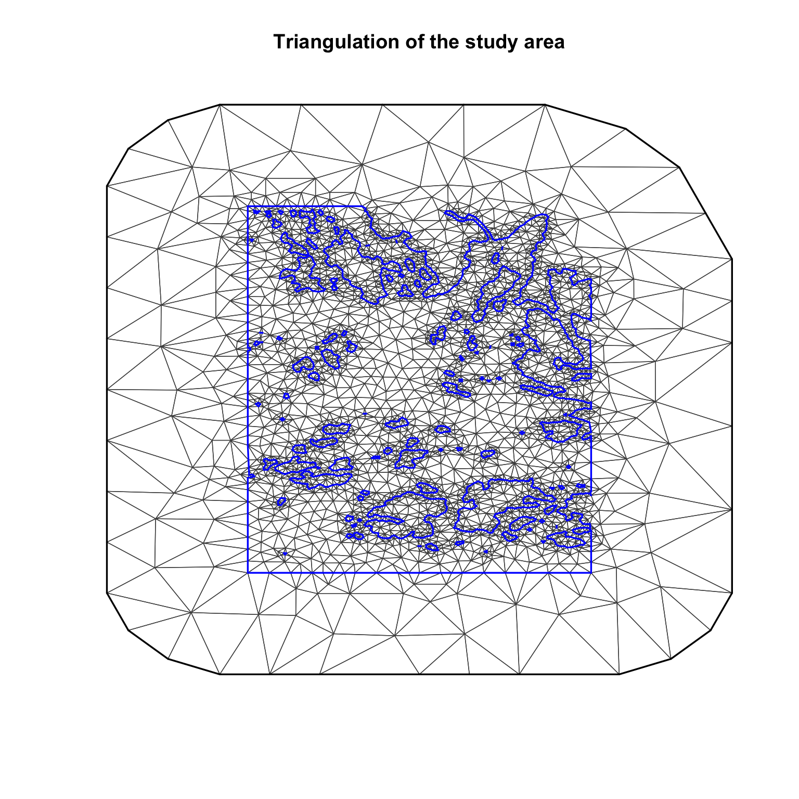
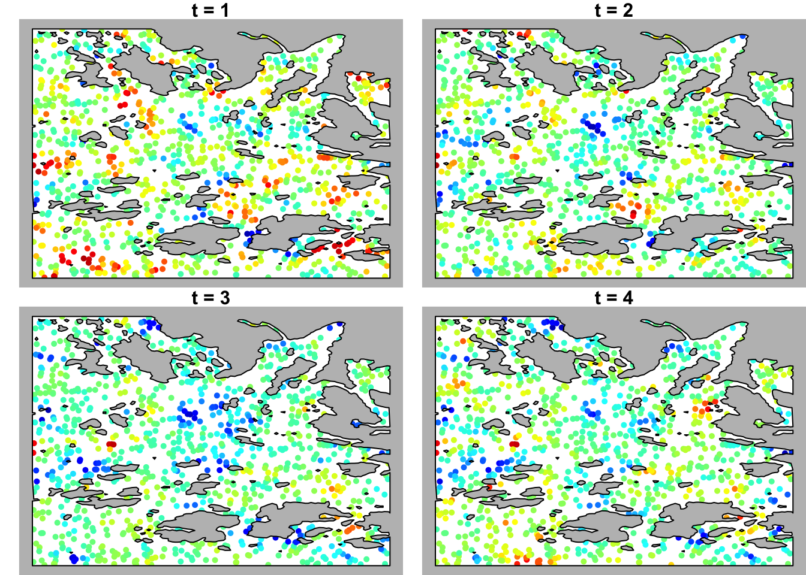
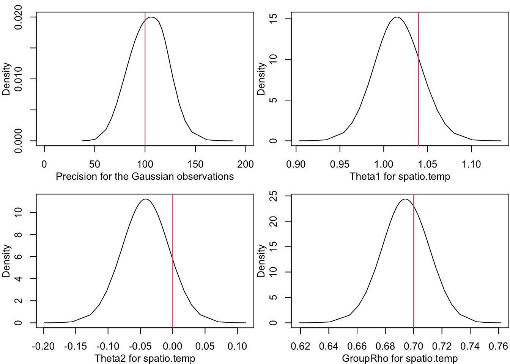
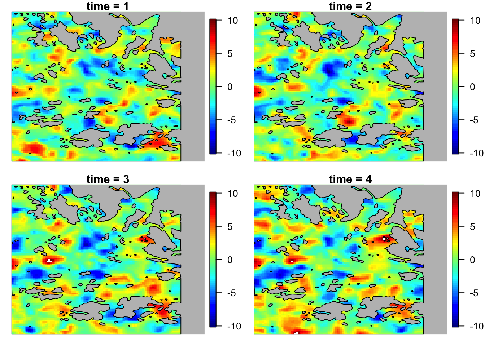
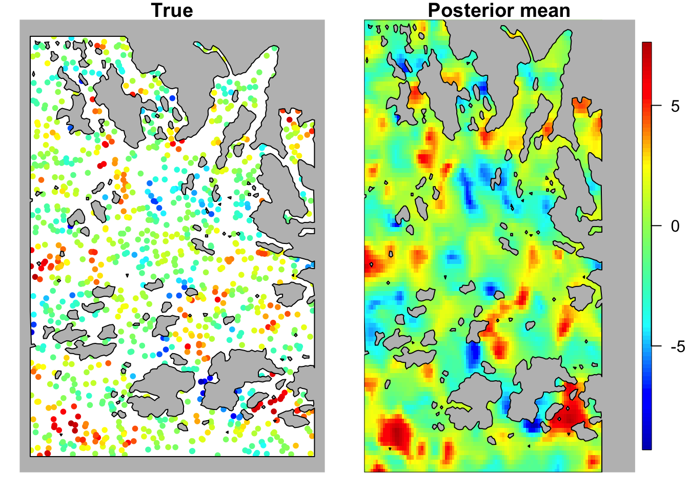

In this page, we show how to implement a Spatio-Temporal barrier model. We have already shown why and how to implement a barrier model without a temporal structure here [link archipelago webpage] (a barrier model is a non-stationary spatial model). Here, we extend what we did in the abovementioned webpage, taking into account a temporal structure. This is the most natural extension to which we can think, unfortunately, the world mutates with time. Fortunately, these changes are correlated with each other and INLA comes to help us.
To give the reader a better understanding of this model we simulate data with a given spatio-temporal structure (the alternative would be to use real data). After this preliminary section, we fit the model using INLA. In the end, we made a comparison between the truth and what we have estimated along the way (knowing the truth is another reason to simulate). To use this model for real data, you just remove the simulation code and replace that with reading in the real data.
A large part of the code is taken from SPDE tutorial of Krainski et al. (n.d.), you can find it at http://www.r-inla.org/examples/tutorials/spde-tutorial.
In this section, we set up the study area and we build the mesh. In the next section, in which we generate data, we will explain the model more in detail.
First of all, we have to import the data and all the packages that we will need. If you need, you can download the data at https://haakonbakkagit.github.io/data/WebSiteData-Archipelago.RData. For a description of the data see Kallasvuo, Vanhatalo, and Veneranta (2016) Data collection was funded by VELMU and Natural Resources Institute Finland (Luke).
library(INLA)
library(fields)
library(rgeos)
library(sp)
library(colorRamps)dir.create("data")
download.file(url = https://haakonbakkagit.github.io/data/WebSiteData-Archipelago.RData", destfile = "data/WebSiteData-Archipelago.RData")## Load data
load(file = "data/WebSiteData-Archipelago.RData")
# - if you have saved the file locally
## What is loaded
# - poly.water is our study area
# - df is our dataframe to be analysed
# - dat is the orginial dataframe
str(poly.water, 1)## Formal class 'SpatialPolygons' [package "sp"] with 4 slotsFor our purposes, we need only the shape file of the study area \(\texttt{poly.water}\). To speed up the code and to make the process lighter we consider only half of the original study area. To accomplish that we need basically two steps. First, select the study area in which we are interested. Second, intersect the selected study area with the entire one. We implement these two steps using function from \(\texttt{sp}\) and \(\texttt{rgeos}\) packages.
# Find the boundaries of the reduced study area
xmax = poly.water@bbox[1,2]
xmin = xmax/2
ymax = poly.water@bbox[2,2]
# Define the reduced study area as a Polygon
study_area = Polygon(cbind(c(0, xmin, xmin, 0, 0),
c(0, 0, ymax, ymax, 0)), hole = F)
study_area = SpatialPolygons(list(Polygons(list(study_area),'1')))
# Intersect with the entire study area
shape <- gBuffer(poly.water, byid=TRUE, width=0) #for gIntersection operation## Warning: GEOS support is provided by the sf and terra packages among
## othersshape2 <- gIntersection(shape, study_area)## Warning: GEOS support is provided by the sf and terra packages among
## otherspoly.water = shape2
# Take a look
plot(poly.water, main = 'Reduced study area')Spoiler Alert : for the spatial effect, we are assuming a process which is continuous in space.
Problem: we don’t have yet the computational power to consider something really continuous and probably we’ll never have it. Then, after some (tons of) mathematical tricks, it turns out that we can consider a discretization of the space and approximate the continuous process with something discrete. This discretization of the study area is called mesh and it consists in splitting the study area into many little triangles. Fortunately, INLA does the job for us. You can find more detail on the mesh construction here [link mesh page].
set.seed(2018)
set.inla.seed = 2018
max.edge = 0.6
bound.outer = 3.6
prmesh1 = inla.mesh.2d(boundary = poly.water,
# loc=cbind(df$locx, df$locy),
max.edge = c(1,5)*max.edge,
cutoff = 0.06,
offset = c(max.edge, bound.outer))
# take a look
plot(prmesh1, lwd = 0.7, main="Triangulation of the study area")
title(main = "Triangulation of the study area")
#points(df$locx, df$locy, pch = 21, bg = 2)Once we have finished with the preliminaries, let us go through this tricky generation process. This section is split in two part: the first is more technical and its purpose is to obtain an index column representing the mesh triangles that are on the barrier. This index column is used later and it’s essential for INLA to understand which triangles of the mesh are in the barrier and which are in the study area. This difference is the essence of this model, if you don’t know what we are talking about please check this other web page [link to archipelago barrier model ]. The second part contains the core of the simulation, the model used and the plots of the simulated data.
To find which triangles are in the barrier we proceed in the following way: first, find the barycenter of each triangle and then intersect the vector of barycenters with the barrier polygon (\(\texttt{poly.water}\)). In this way, we obtain the index of the triangles outside the barrier, then, we just take the difference between the index vector of all triangles and the triangles outside the barrier and les jeux sont faits.
# Total number of triangles
tl = length(prmesh1$graph$tv[,1])
# Index vector of all triangles
all.triangles = 1:tl
# Matrix containing the location of the barycenters
barycenters = matrix(0, nrow = tl, ncol = 2)
for(t in 1:tl){
temp = prmesh1$loc[prmesh1$graph$tv[t, ], ]
barycenters[t,] = colMeans(temp)[c(1,2)]
}
# Transform it in SpatialPoints to intersect it with the barrier easily
barycenters = SpatialPoints(barycenters)
# Intersect
not.barrier = over(poly.water, barycenters, returnList=T)
not.barrier = unlist(not.barrier)
# Difference
barrier.triangles = setdiff(all.triangles, not.barrier)
# This object will be usefull later, just to plot.
poly.barrier = inla.barrier.polygon(prmesh1, barrier.triangles)Once we have the triangles composing the barrier, we can start the simulation process. For each location, we are simulating data according to the following model:
\[ y_{it} = w_{it} + \hat{x}_{it} + \xi_{it} \]
where the subscript \(i\) and \(t\) represents, respectively, the sample location and the time. The variable \(w_{it}\) is a categorical variable, \(\hat{x}_{it}\) is the spatio-temporal random effect and \(\xi_{it}\) is a noise term. The random effect \(\hat{x}_{it}\) is supposed to vary continuosly over space, it is a solution of a SPDE which, trust me, you don’t want to see. We approximate it with a Gaussian Markov Random Field (GMRF) with a Matern covariance function. Without being too technical a Matern covariance function means that the covariance between two points is a function of the distance between them, plus some other parameters that we are going to see soon.
For the sake of simplicity, we consider only \(k = 4\) time periods. Let us start the simulation from the spatio-temporal random effect. We have to simulate \(4\) random field, correlated both in time and space. Hence, we extract \(4\) independent samples \(\boldsymbol{x}\) from a non-stationary (because of the barrier) GMRF with Matern covariance function and we combine them in order to obtain an AR(1) temporal structure with following formula:
\[ \hat{x}_t = \rho x_{t-1} + \sqrt{1-\rho^2} x_t \]
To simulate such random field we need to specify at least three parameters. Two of them are related to the Matern covariance function: the range \(r\) and the marginal variance \(\sigma^2\). The range \(r\) could be interpreted as the distance between locations for which the covariance is around \(0.1\). The last parameter that we have to fix is \(\rho\) in the above formula. We choose to set \(r = \sqrt{8}\), \(\sigma^2 = 1\) and \(\rho = 0.7\)
Let us start taking \(n = 1000\) locations at random from the study area:
loc.data <- spsample(poly.water, n = 1000, type = "random")
coords <- loc.data@coordsk <- 4
range <- sqrt(8)
sigma <- 1
rho <- 0.7
# input parmaters for the INLA function
theta <- c(log(range),log(sigma))
# mesh for the simulation
simulation.mesh <- prmesh1The package INLA helps us to simulate from a non-stationary GMRF which approximates the solution of an SPDE. In order to do that, we need to create three objects. A \(\texttt{spde}\) object, which takes into account the mesh structure and the barrier. A Matern precision matrix \(Q\) (yes, everything is faster working with precision matrices), with range \(r\) and \(\sigma^2\) specified above, and a projection matrix \(A\). This matrix \(A\) is essential to find the value of the random field in the data locations. In fact, from the simulation, we obtain the value of the random field on the mesh points, we need \(A\) to project this values on the sample locations. We know that is not that easy, but, in the end, it’s three lines of code.
# Create spde to simulate
# Ignore range and sigma priors, the function doesn't work without, you can put
# there everything
simulation.spde <- inla.barrier.pcmatern(mesh=simulation.mesh,
barrier.triangles = barrier.triangles,
prior.range = c(0.1,0.1),
prior.sigma = c(0.1,0.1))
# Create precision
simulation.Q <- inla.rgeneric.q(simulation.spde, "Q", theta=theta)
# Create projection matrix
simulation.A <- inla.mesh.project(mesh=simulation.mesh, loc=coords)$ANow, we have all the elements needed for the simulation. Let us simulate four independent sample from the random field and aggregate them to build an AR(1) structure.
# simulate 4 independent samples
x <- inla.qsample(k, simulation.Q, seed=0, constr=simulation.spde$f$extraconstr)
# initialize a matrix
x.hat = matrix(NA, nrow = nrow(simulation.A), ncol = ncol(x))
# project each sample on the data locations
for (j in 1:ncol(x)){
x.hat[, j] <- drop(simulation.A%*%x[,j])
}
# aggregate to create an AR(1)
for (j in 2:k){
x.hat[,j] <- rho*x.hat[,j-1] + sqrt(1-rho^2)*x.hat[,j]
}
# Take a look
rbPal <- colorRampPalette(matlab.like2(100))
par(mfrow=c(2,2), mar=c(0,1,1,0))
for (j in 1:k){
Col <- rbPal(100)[as.numeric(cut(x.hat[,j], breaks = 100))]
plot(coords, pch = 20, col = Col, xlab = '', ylab = '',
main = paste0('t = ', j), axes = F)
plot(poly.barrier, add = T, col = 'grey')
}
The tricky part is over, only things missing are to simulate the categorical covariate \(\boldsymbol{w}\) and to create our output \(\boldsymbol{y}\). In particular, we simulate \(\boldsymbol{w}\) sampling \(n*k = 4000\) values from the set \(\{-1, 0, 1\}\). For the noise we consider \(n*k\) independent values extracted from \(N(0, 0.1)\).
set.seed(2)
n <- nrow(coords)
# sample the categorical covariate
w <- sample(-1:1, n*k, replace=TRUE)
# take a look
table(w)## w
## -1 0 1
## 1389 1297 1314sd.y <- 0.1
# generate the target variable
y <- x.hat + w + rnorm(n*k, 0, sd.y)
w <- factor(w)
#see the mean of y which have the same value of w
tapply(y, w, mean)## -1 0 1
## -1.35 -0.42 0.63The last step: organize our data in a data frame. Sometimes, it may happen that we have different data locations for different times. To show that, we just drop half of the observations. The provided code still works in the case in which we have totally misaligned data points. In the below data frame, there is also an index variable representing the time at which each observation is recorded.
isel <- sample(1:(n*k), n*k/2)
dat <- data.frame(y=as.vector(y),
w=w,
time=rep(1:k, each=n), #notice the time
xcoo=rep(coords[,1], k),
ycoo=rep(coords[,2], k))[isel, ]Warning : you are entering in a theoretical section.
Once we have the data, we have to fit a model to retrieve the spatio-temporal effect and the model parameters. The model that we are going to implement is the following:
\[ Y_{it} \sim N(\eta_{it}, \tau^2_y) \]
Where, \(\tau^2_y\) is the precision and
\[ \eta_{it} = \beta_w w_{it} + u_{it} \]
Here, \(\beta_w\) is a coefficient that depends on the value of the categorical variable \(w\). The spatio-temporal random effect \(u_{it}\), as we said before, has an AR(1) structure:
\[ u_{it} = \rho u_{i(t-1)} + \xi_{it} \\ \ \\ \xi_{it} \sim GRF(r, \sigma) \] Where \(r\) is the range and \(\sigma\) is the marginal standard deviation of the Gaussian random field. The most mindful readers will have surely notice that we have a bunch of free parameters, respectively, \(\tau^2_y, ~\rho, ~r\) and \(\sigma\). What could we do with them? Fixing them is not an option, of course. It’s time to show our Bayesian soul: let us put some priors.
In this example, we choose to use the so-called penalized complexity (PC) priors. Don’t worry, we are not going into details of that, the choice of the prior distributions is a broad, obscure and “not even close to being closed” topic. Here, we limit ourselves to expose the idea behind the PC priors. These priors inherit their name from the Occam’s razor principle, we would like to end up with the easiest model possible, called base model. For example, the base model for a random effect is the absence (variance equal zero) of the random effect. The role of the prior is to shrink the posterior toward the base model and the posterior will be far from the base model only if the data supports this hypothesis. As you can imagine, also the PC priors have parameters that need to be fixed (yes, this loop will never end). But, this time, we can choose the parameters of the PC priors imposing some probabilistic constraints, one constraint for each PC prior. The nature of those constraints is intuitive and depends on the application. In our example we impose the following constraints:
\(\text{Pr}(r < 0.5) = 0.01\)
\(\text{Pr}(\sigma^2 > 1) = 0.01\)
\(\text{Pr}(\rho > 0) = 0.9\)
\(\text{Pr}(\tau^2_y < 1) = 0.01\)
You can find more details on PC priors and the main idea on Simpson et al. (2014) If you are interested in a detailed derivation of the PC priors for a Gaussian random field please check the work of Fuglstad et al. (2017)
We know that many of you have skipped the previous part, don’t worry, it’s not a big sin, read the model would be sufficient. Now, we are going to implement the above model using the INLA package which allows us to don’t study a lot of complicated and tangled theory and still implement very difficult models. As always, we start from the random effect. Given that, we are considering a spatial random effect that is a solution of an SPDE, we have to create an \(\texttt{spde}\) object, very similar to the one used for the simulation. The only difference is that now, we have to specify the prior properly. We also create an index called \(\texttt{iset}\) which is necessary to identify the spatio-temporal random effect. As a first argument the function \(\texttt{inla.spde.make.index}\) takes the name for the random effect, with a momentaneous lack of fantasy we call it \(\texttt{spatio.temp}\). In the results, all the quantities relative to the spatio-temporal random effect goes under that name.
spde <- inla.barrier.pcmatern(mesh=prmesh1,
barrier.triangles = barrier.triangles,
prior.range=c(0.5, 0.01), #P(range < 0.5) = 0.01
prior.sigma=c(1, 0.01)) #P(sigma > 1) = 0.01
# fix the other two priors
rho.prior <- list(theta=list(prior='pccor1', param=c(0, 0.9))) #P(rho > 0) = 0.9
theta.prior <- list(prior='pc.prec', param=c(1, 0.01)) # P(tau < 1) = 0.01
# create an index to pass to the stack and to f() later
iset <- inla.spde.make.index('spatio.temp', n.spde = prmesh1$n, n.group = k)Have we already talk about the fact that the locations relative to random effect and the data differ? In that situation writing a model correctly could be tricky, we have to pay attention to the projections and the locations may change from time to time. Fortunately, INLA does the job for us through the \(\texttt{stack}\) object. We could look at the \(\texttt{stack}\) as our model manager, we give to it the target variable, the effects (random and fixed) and the projection matrices and we don’t have to care about it anymore.
# Create projection matrix (it includes also the time!)
A <- inla.spde.make.A(mesh=prmesh1,
loc=cbind(dat$xcoo, dat$ycoo),
group=dat$time)
# Build the stack
stack <- inla.stack(tag = 'stdata',
data = list(y=dat$y), # target variable
A = list(A,1), # projection matrices, 1 = no projection
effects = list(iset, w = dat$w)) # list of effectsFor the ones that have skipped the previous section and don’t scroll up and see the model, we write it again, in this way the reader can appreciate the simplicity with which is translated in the formula:
\[ Y_{it} \sim N(\eta_{it}, \tau^2_y) \\ \eta_{it} = \beta_w w_{it} + u_{it} \]
formula <- y ~ 0 + w +f(spatio.temp, model=spde, group=spatio.temp.group,
control.group=list(model='ar1', hyper=rho.prior))In the above formula, tha spatio-temporal random effect is specified using the function \(\texttt{f()}\). This function takes as input the index that we have created using \(\texttt{inla.spde.make.index()}\), the model (represented by the spde object) and with \(\texttt{control.group}\) we specify the temporal structure that we are using.
After all this way we are finally ready to fit our model. Here, we use a little trick: we specify the initial values of the parameters. The computational time is drastically reduced, from 8 minutes to 1. At the end of the chunk, we show how to retrieve those values, notice that to retrieve it you have to run the model without the last two options.
init = c(4.689, 0.977, -0.007, 1.714)
res <- inla(formula, data=inla.stack.data(stack),
control.predictor=list(compute=TRUE, A=inla.stack.A(stack)),
control.family=list(hyper=list(theta=theta.prior)),
control.fixed=list(expand.factor.strategy='inla'),
control.compute = list(return.marginals=F, config=T),
control.inla= list(int.strategy = "eb"), # line to add to speed up
control.mode=list(restart=T, theta=init)) # line to add to speed up
res$internal.summary.hyperpar$mode## [1] 4.703 1.015 -0.042 1.709In this section, we take a look at the performances of our model and we show how to obtain some nice plots of the posterior distributions and the random effect. Let us start looking at the coefficient of the categorical variable \(\boldsymbol{w}\), they should reflect the values of the mean of the variable \(\boldsymbol{y}\) for each category. As we can see they are pretty similar and the observed means are in \(95%\) confidence interval of the coefficients.
tapply(dat$y, dat$w, mean) # Observed mean for each covariate level## -1 0 1
## -1.40 -0.38 0.72round(res$summary.fixed,4) # Coefficients of the categorical variable## mean sd 0.025quant 0.5quant 0.97quant mode kld
## w-1 -1.26 0.24 -1.73 -1.26 -0.80 -1.26 0
## w0 -0.24 0.24 -0.71 -0.24 0.22 -0.24 0
## w1 0.74 0.24 0.26 0.74 1.19 0.74 0The function \(\texttt{inla()}\) gives us many objects as output, \(51\) to be precise. It’s like the Supermarket of your analysis, you can find everything you need in there. Of course, we are not going to review all the elements of the list. For now, we limit ourselves to the posterior distributions of the hyper-parameters \(\rho\), \(\tau^2_y\), \(\sigma\) and \(r\). In particular, we are interested in the marginal posterior distribution for each parameter. All of them are stored in \(\texttt{res\$marginals.hyper}\). Inside it, you can find:
names(res$marginals.hyper)## [1] "Precision for the Gaussian observations"
## [2] "Theta1 for spatio.temp"
## [3] "Theta2 for spatio.temp"
## [4] "GroupRho for spatio.temp"We just plot them in comparison with the true value of each parameter (red line). Here, Theta1 and Theta2 are the logarithm of the range \(r\) and the marginal variance \(\sigma\) respectively.
par(mfrow=c(2,2), mar=c(3,3,1,0.1), mgp=2:0)
plot(res$marginals.hyper[[1]], type='l',
xlab=names(res$marginals.hyper)[1], ylab='Density',xlim=c(0,200))
abline(v=c(1/sd.y^2, log(range),
log(sigma), rho)[1], col=2)
for (j in 2:4) {
plot(res$marginals.hyper[[j]], type='l',
xlab=names(res$marginals.hyper)[j], ylab='Density')
abline(v=c(1/sd.y^2, log(range),
log(sigma), rho)[j], col=2)
}
Just a couple of wards from the marginal distributions of the parameters we can find the posterior summaries of the spatio-temporal random effect. These summaries are contained in \(\texttt{res\$summary.random\$spatio.temp}\), in this object, you can find the main statistics about the posterior of the random effect.
names(res$summary.random$spatio.temp)## [1] "ID" "mean" "sd" "0.025quant" "0.5quant"
## [6] "0.97quant" "mode" "kld"Considering the mean as a posterior estimate we can plot the predicted spatio-temporal effect. To do that we have to project the values on a lattice, we can do it easily using the function \(\texttt{inla.mesh.projector()}\). The argument \(\texttt{dims}\) represents the dimensions of the projection lattice. Then for each value of \(\texttt{iset\$spatio.temp.group}\) (which is the time), we project the posterior mean of the random effect and plot it.
projgrid <- inla.mesh.projector(prmesh1,
xlim=range(coords[,1]),
ylim=range(coords[,2]),
dims=c(100,100)) #produce the projection grid
#produce the prediction result for each time
xmean <- list()
for (j in 1:k){
xmean[[j]] <- inla.mesh.project(projgrid,
res$summary.random$spatio.temp$mean[iset$spatio.temp.group==j])
}
#plot the prediction result
par(mfrow=c(2,2), mar = c(1,1,1,1))
for (i in 1:k){
image.plot(list(x = projgrid$x, y=projgrid$y, z = xmean[[i]]), xlim=c(0,10),
ylim=c(0,13), main = paste0('time = ', i), axes = F, zlim=c(-10, 10))
plot(poly.barrier, add=T, col='grey')
}
To check that the results are coherent with the true random effect, we plot both. We do it just for \(time = 1\), the results are pretty similar for the others times. As you can see, the plots are alike and we can conclude that our model is able to retrieve the simulated spatio-temporal structure.
par(mfrow=c(1,2), mar=c(1,1,1,1))
# plot true one
rbPal <- colorRampPalette(matlab.like2(100))
Col <- rbPal(100)[as.numeric(cut(x.hat[,1], breaks = 100))]
plot(coords, pch = 20, col = Col, xlab = '', ylab = '', cex = 1,
axes = F, main = 'True')
plot(poly.barrier, add = T, col ='grey')
# plot estimate
image.plot(list(x = projgrid$x, y=projgrid$y, z = xmean[[1]]),
xlim=c(0,10), ylim=c(0,13),
col = matlab.like2(100), axes = F, main = 'Posterior mean')
plot(poly.barrier, add=T, col='grey', xlim = c(0,10))